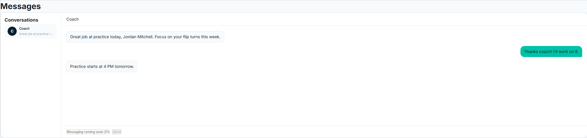
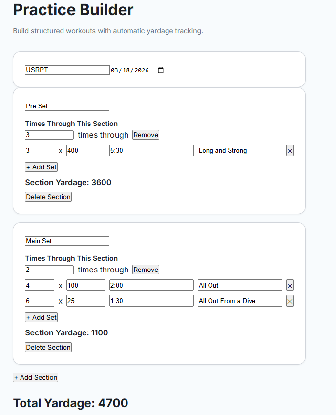
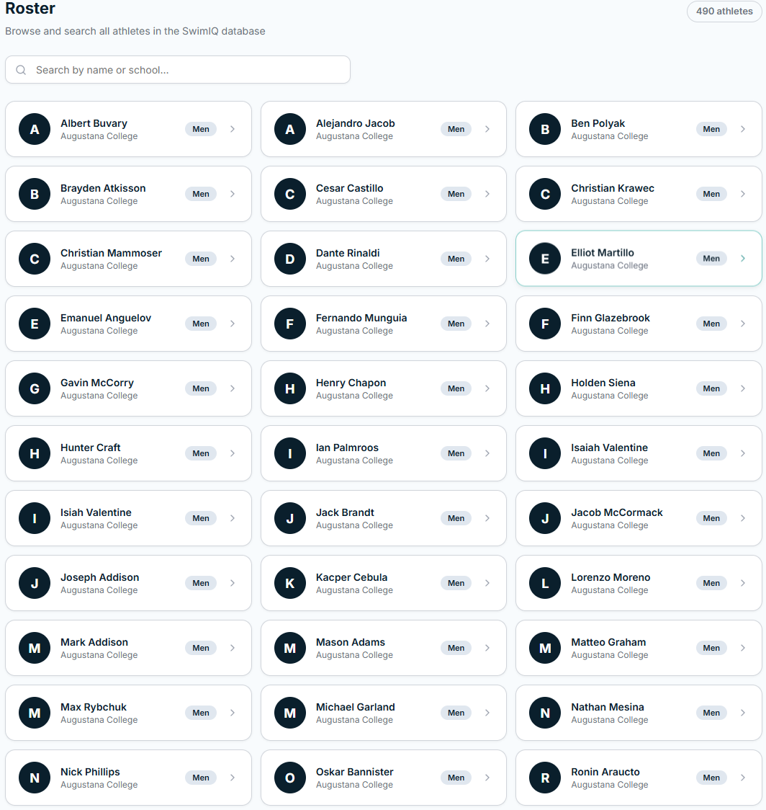
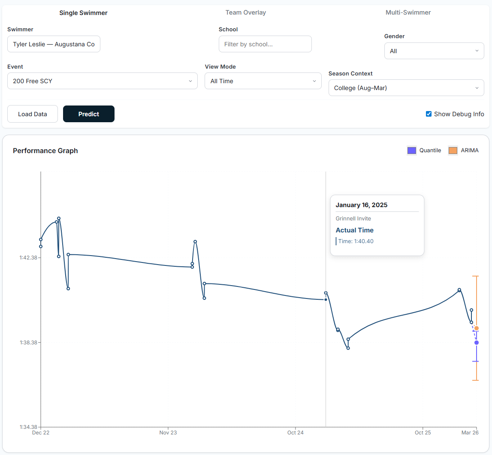
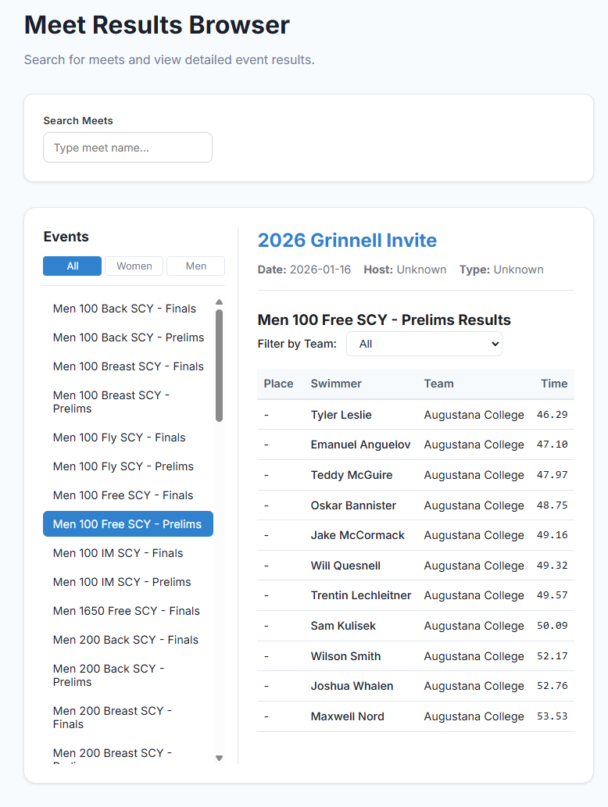
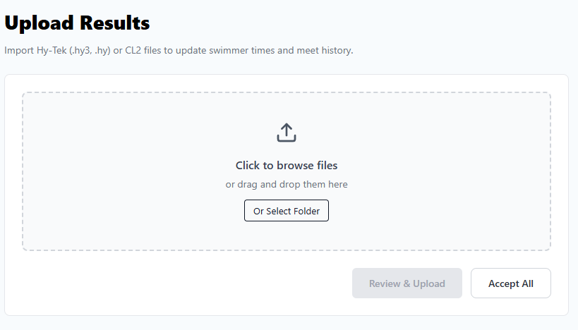

Temporary Messaging Center
A temporary Messaging Center was created to give the users an idea of what the messaging center will look like. We will continue to keep working on the messaging center and will use Firebase to do so.

Temporary Practice Builder
A simplified practice-building tool was implemented to accelerate workout creation. This temporary builder allows coaches to construct structured training sessions efficiently while the primary event system continues to evolve. It supports rapid iteration and flexible session design.

CCIW Team Rosters
Team rosters for CCIW programs were added to establish structured swimmer organization by team affiliation. This dataset supports future integration with analytics, meet results, performance tracking, and predictive modeling systems.

End-of-Season Prediction Model
An analytics model was developed to predict a swimmer’s projected end-of-season time using historical performance data. The model evaluates trends over time and generates projections that can assist with training planning and performance goals. This marks a significant expansion of SwimIQ’s analytical capabilities.

Meet Result Data Integration
Competition results are now stored within the system, creating a structured performance history for each swimmer. Meet data can be associated with athletes and events, enabling deeper analysis and long-term tracking of competitive outcomes.

Meet Result Upload System
A new upload workflow was implemented to allow coaches to import meet results directly into the platform. This system reduces manual entry, standardizes data formatting, and ensures consistent integration of competition results into the database.

Overall Impact
These additions significantly expand SwimIQ beyond scheduling and into communication, structured roster management, performance analytics, and competition data processing. Together, they strengthen the platform’s data foundation and prepare it for deeper integration between training, meets, and predictive modeling.